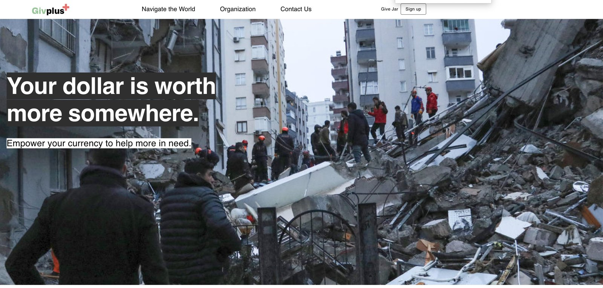
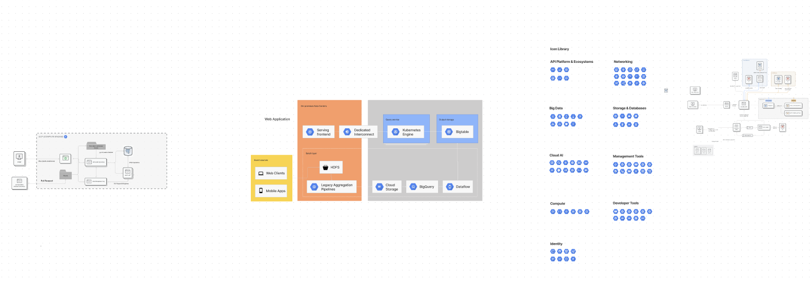

The Brief
The Google Solution Challenge asks student teams to pick at least one of the UN's 17 Sustainable Development Goals and build a working solution around it using at least one Google product or service. As a Google Developer Student Club (GDSC) Waseda backend member studying economics, I wanted a project that put that major to use — so I started looking for an economic inefficiency worth fixing.
The Idea — Why Currency Should Change How You Give
The spark was a news clip about a single tweet: because of the gap between the Korean won and the Turkish lira, the price of three coffees in Korea could buy five blankets for survivors of the 2023 Turkey–Syria earthquake. I thought to myself: If I could use the difference between two nation's price level and their exchange rates, a "small" donation could make a change.
I thought about it the way I think about buying a book on Amazon — if the price and shipping never change, you'd rather check out when $1 buys ₩1,000 than when it buys ₩1,300. The same logic applies to giving: the same ₩1,000 donation can carry more or less real value depending on the exchange rate on the day you give it, yet almost no donation platform accounts for that.
I also didn't want Givplus to be a one-disaster platform. The earthquake was the spark, but the people who needed help before it were still there afterward, and disasters aren't the only lens for need — even the United States, one of the wealthiest countries in the world, has a well-documented homelessness problem, though most people picture Sub-Saharan Africa or Southeast Asia first when they think of "who needs help." I wanted a platform that corrected for that imbalance rather than reinforcing it.
Why "Givplus"
The name merges Give and surplus — in economics, surplus can mean excess value, which is exactly what a favourable exchange rate creates for a donor. It also happens to sound close to the Korean word for donation, 기부 (gibu), which made it an easy name to say out loud in either language.
The Givplus Score
Every country and partner NGO is ranked by a single number that blends two economic indicators: a Forex Score (how favourable the current exchange rate is relative to its own moving-average trend) and PPP (purchasing power parity, inverted so that lower price levels — more need — score higher).
Forex intentionally outweighs PPP because it moves faster — price levels barely shift day to day, so weighting PPP too heavily would freeze the leaderboard on the same countries and NGOs every time. Exchange rate is calculated as a weighted moving average across five time windows (5, 20, 60, 120, and 200 days) so the score reflects a stable trend, not daily noise.
Product Tour
The landing page leads with the story that started the project, then routes donors into a ranked, filterable view of where their currency currently goes furthest.


How the Platform Is Structured
Beyond the ranking itself, Givplus is a full donor flow: Google sign-in or email auth, a currency-aware "giving jar," a world map that drills down from country to individual project, an NGO/organisation directory, checkout, and a personal account area with donation history, transaction status, tax-receipt declarations, and donation certificates.

Team & Planning
It was the pandemic era, so recruiting locally at Waseda made little sense — even inside GDSC Waseda's backend team, most members had never met in person. I posted the idea to the GDSC Waseda Slack and reached back out to people I'd worked with on past projects, ending up with two Waseda engineering students and one student from Nanyang Technological University (NTU), based across South Korea, Japan, and Singapore. We ran the project entirely remotely over Slack, KakaoTalk, Figma, and Zoom, mapping out features and decisions together in Figma before any code was written — including the decision to build Givplus as a web app rather than a native app, since asking someone to download an app just to make a one-time donation felt like the wrong tradeoff.

Built With
Real-time scoring runs on Google Cloud so the leaderboard reflects current exchange rates rather than a static snapshot, with Google Maps powering the country drill-down.

Challenges & Outcome
Running the Givplus Score calculation in real time on Google Cloud turned out to be expensive, and the team's limited hands-on experience with GCP and backend infrastructure surfaced plenty of technical problems along the way. When issues piled up, I arranged meetings with Google Japan engineers and the Solution Challenge program staff directly — that got us cost credits to cover the overrun and unstuck several of the technical blockers, and their feedback shaped later iterations of the product.
Givplus is inactive today. The revenue model never became sustainable relative to the cost of running it, and there were open theoretical questions about the scoring model I wasn't comfortable brushing aside, so the team made the call to wind it down responsibly rather than keep it running on shaky footing. It's still one of the projects I learned the most from — economics, distributed teamwork, and cloud infrastructure all at once.